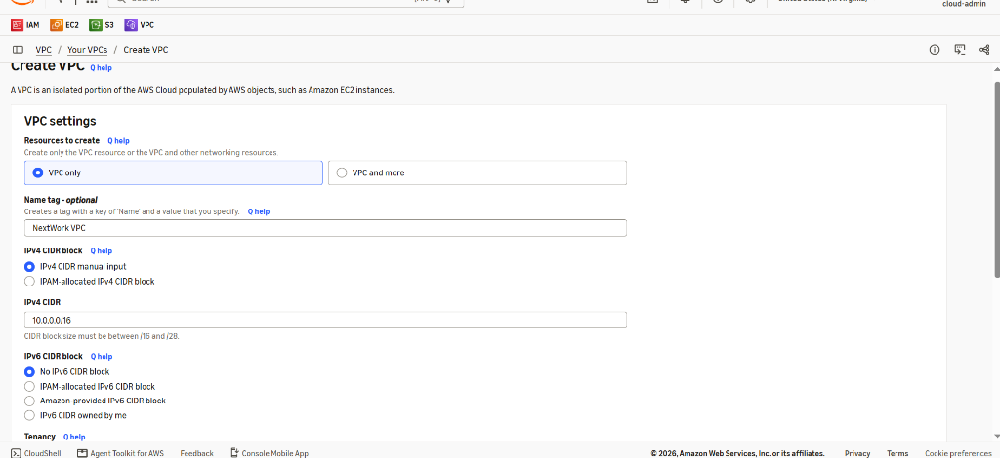
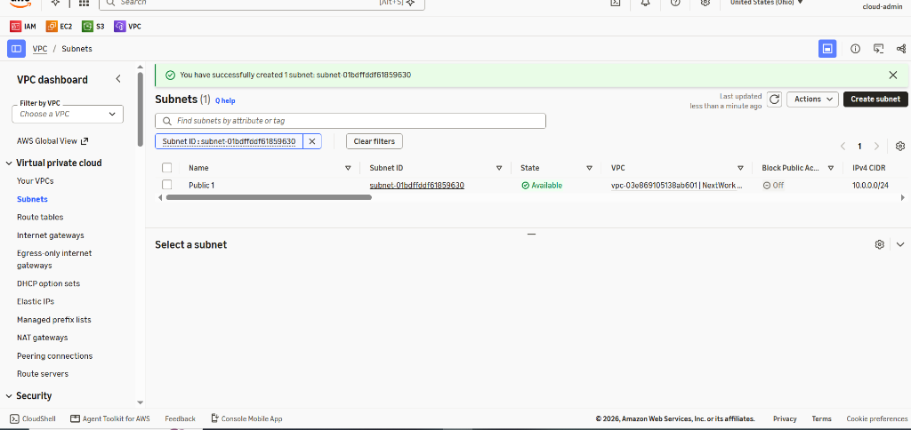
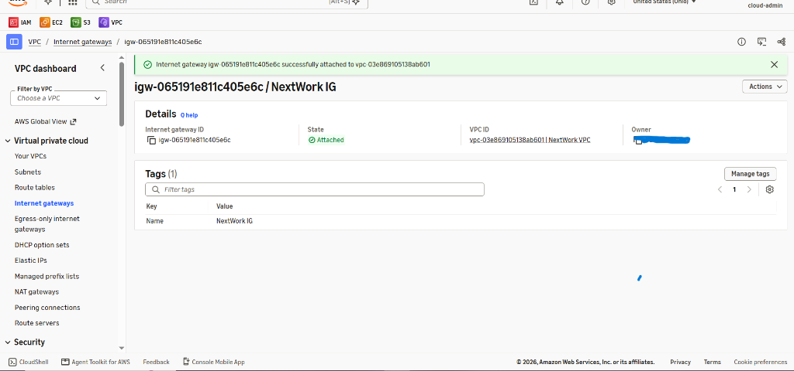

✅ AWS VPC Series — Part 1 of 9
My First AWS VPC: Console & CLI
In this NextWork project I took my first steps in AWS networking. I created a VPC, a subnet and an internet gateway (IGW) in the AWS Management Console. Then I repeated the same setup with the AWS CLI in CloudShell (Secret Mission).
AWS (VPC, Subnet, Internet Gateway)
AWS Management Console
AWS CloudShell
AWS CLI
Git & GitHub

What I Built — Console
VPC "NextWork VPC" (10.0.0.0/16)
Subnet "Public 1" (10.0.0.0/24)
Internet Gateway "NextWork IG" (attached)
Subnet "Public 1" (10.0.0.0/24)
Internet Gateway "NextWork IG" (attached)
What I Built — CLI (CloudShell)
VPC "NextWork VPC 2" (10.0.0.0/24)
Subnet 10.0.0.0/25
IGW attached
Subnet 10.0.0.0/25
IGW attached
Note: The subnet is named "Public 1", but it only becomes truly public after a route to the internet gateway is added. I will do that in the next project of the series.
1. Steps — AWS Management Console
- Created the VPC
NextWork VPCwith CIDR10.0.0.0/16. - Created the subnet
Public 1with CIDR10.0.0.0/24and enabled auto-assign public IPv4. - Created the internet gateway
NextWork IGand attached it to the VPC.
2. Steps — Secret Mission (AWS CLI in CloudShell)
Repeated the setup using AWS CLI commands in AWS CloudShell:
aws-cloudshell-vpc-commands.sh
aws ec2 create-vpc --cidr-block 10.0.0.0/24 --query Vpc.VpcId --output text
aws ec2 create-tags --resources <vpc-id> --tags Key=Name,Value="NextWork VPC 2"
aws ec2 create-subnet --vpc-id <vpc-id> --cidr-block 10.0.0.0/25
aws ec2 create-internet-gateway --query InternetGateway.InternetGatewayId --output text
aws ec2 attach-internet-gateway --vpc-id <vpc-id> --internet-gateway-id <igw-id>3. Challenges (Problem / Diagnosis / Solution)
Problem:
InvalidVpcId.Malformed and InvalidInternetGatewayId.MalformedDiagnosis: I copied the IDs without their prefix (
vpc-, igw-).Solution: Used the full IDs.
Problem:
create-tags failedDiagnosis: I left the placeholder
VPC-ID in the command.Solution: Replaced it with my real VPC ID.
Problem:
create-subnet failedDiagnosis: I forgot
--cidr-block and misspelled --cidr-bloc.Solution: Added the option and fixed the spelling.
Lesson: Read the command slowly, replace every placeholder, and use
--help to check option names.
4. Cost & Cleanup
A VPC, subnets and an internet gateway are free. I did not create any NAT gateway, EC2 instance or public IP. The resources are still in my account. I will delete them after I finish the VPC series: detach and delete the internet gateway, then the subnet, then the VPC.
5. Screenshots
Screenshot 1

Screenshot 2

Screenshot 3

Part 1 Resources & Links
View the GitHub repository and the NextWork project guide for Part 1.